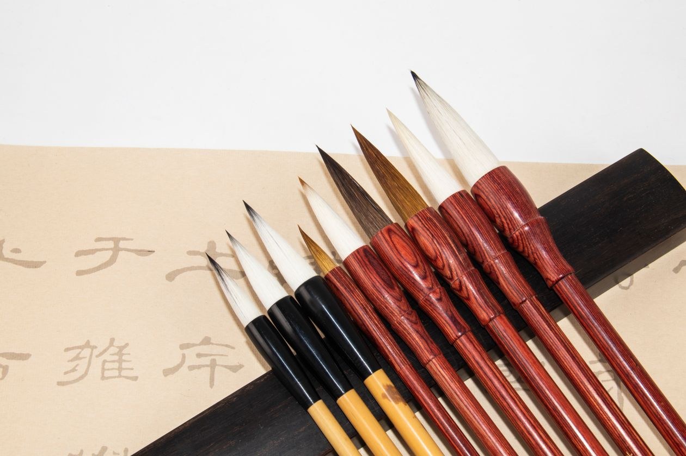
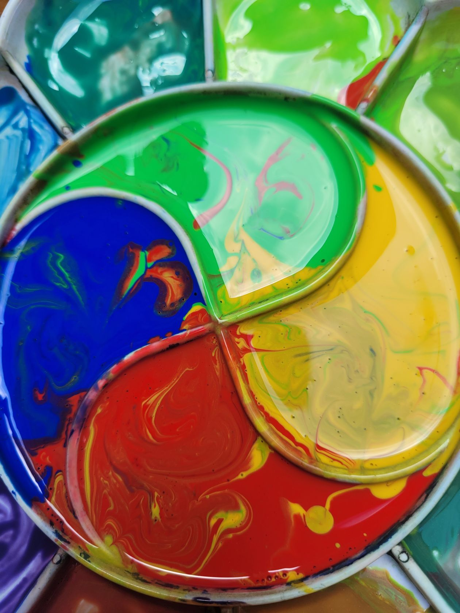
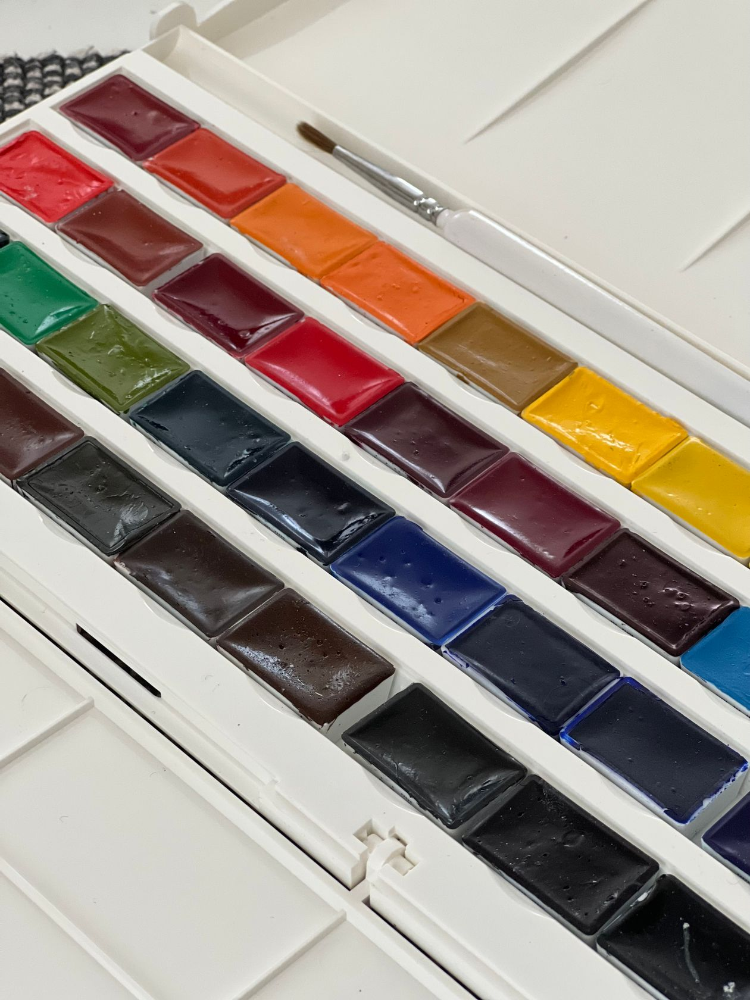

The painter
Twenty years at reading distance
I learned the tarh — the drawing — from my grandfather, who drew book covers for a Lucknow press and believed a line should be right before it is beautiful. Pigment-grinding I learned later, in Jaipur, from an ustad who made me grind malachite for a full winter before he let me paint with it. He was right. You do not understand a colour until you have made it from a stone.
My studio is one room in Aminabad with a north window, a low desk, and a shelf of shells and stones that visitors mistake for a child's collection. I work four, sometimes five hours a day at the folio. After that the eyes begin to bargain, and a bargain struck with tired eyes is paid for in the painting.
Everything here is slow because the materials insist on it. The wasli must dry. The wash must dry. The gold must wait. A miniature is not a small painting that takes less time; it is a full painting that takes the same time in less space.

Wasli — the paper that behaves
Wasli is not a sheet; it is a small stack of them. Four to eight layers of handmade paper are pasted together with starch, pressed, and burnished with an agate stone — the muhra — until the surface is smooth enough that a brush can turn a corner on it without catching. Single sheets cockle and drink; wasli holds a wash flat and lets you scrape back a mistake with a blade, which on ordinary paper would tear the world apart.
I make my wasli in batches twice a year, in the dry months. Lucknow's monsoon is no friend to starch paste, and a folio begun on damp wasli will tell on itself within five years.
Pigments — ground, not squeezed
Nothing on my folios comes out of a tube. Each colour is a mineral, an earth, a plant or a shell, ground on a stone with water, then bound with gum arabic — gond — and kept in shells. Ground pigment sits differently on wasli: it has a grain, a weight, a way of catching light that manufactured paint is too polite to imitate.
- Lapis lazuliThe blue of skies and river water. The costliest stone on the shelf; a gram is ground at a time, and none is wasted — the wash water is saved and settled.
- MalachiteThe green of gardens and peacock shade. Ground coarse it sparkles; ground fine it deepens. My winter of grinding, in Jaipur, was mostly this stone.
- VermilionThe red of banners and bridal cloth. Heavy, opaque, and it covers like a decision. Used sparingly, it shouts; that is what it is for.
- IndigoThe blue-black of night scenes and deep water, from the plant. It stains the fingers for days, which the studio counts as a signature.
- OrpimentThe yellow of marigold and lamplight. Beautiful and poisonous in the stone age sense — ground wet, handled with respect, kept from children and cats.
- LampblackSoot from an oil lamp, collected on a plate. Outlines, hair, the pupils of eyes — the whole drawing rests on this black.
- Shell whiteFrom burnt conch shell, ground to a powder that sits on top of other colours — the white of egrets, foam and teeth in a smile.
- GoldLeaf beaten thinner than paper, or ground with gum arabic into a paint. Burnished with an agate until it stops looking yellow and starts holding light.


Time, and the truth about keeping one
How long a folio takes, honestly: a postcard folio, two weeks. A court folio with a crowd in it, three months and more. Anyone who offers you a miniature in four days is offering you a print with ambitions. My planner on the folios page quotes from the same weeks I work to — if your deadline is shorter than the painting, it will tell you so, and what to do instead.
Keeping one alive: a miniature is paper, and paper has three enemies — damp, sunlight and being rolled. Frame it behind glass (museum glass if it will hang in a bright room), hang it away from direct sun, and never, ever roll it for storage or travel; the wasli layers will crack along the roll lines and no one can un-crack them. In a humid house, take it down once a year and let it breathe in an air-conditioned room for a day. Handled this way, a folio will outlive everyone currently reading this page — the tradition's own pages have managed six hundred years.
What I do not do: I do not restore old paintings. Repair is a conservator's discipline, with its own training and its own ethics, and a painter who touches an antique page is adding damage, not removing it. I will gladly paint you a companion folio, and tell you which museum to ask about the original.
Workshops
Book a seat →Six seats per workshop, at the studio in Aminabad. Materials are included; students begin on pan colours for the first hour, and by the end of the morning they are grinding their own — there is no other way to learn what a pigment is.

| Workshop | Runs | What you take home | Fee |
|---|---|---|---|
| Pigment-grinding Saturday | One Saturday, 3 hours | A leaf study in malachite and ochre you ground yourself | ₹2,500 |
| Brush-making morning | One Sunday, 2 hours | A squirrel-hair brush you sorted, tied and set | ₹1,800 |
| The six-week folio | Six Saturday mornings | A finished small folio, wasli to border, painted by you | ₹24,000 |
Credits
Photographs are from Pexels (free to use under the Pexels licence) and show painting practice — hands, brushes, pigments, paper — not the fictional folios described on this site: photos 7859163, 7859602, 7859170, 7858885, 9465443, 5697669 and 25025731 via images.pexels.com. Type: Cormorant Garamond and Mulish, Google Fonts (OFL). The painted margin, vine and rosettes are drawn in SVG for this template. No historical manuscript artwork is reproduced anywhere on this site. Sound: none — a miniature is looked at, not listened to.